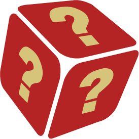

<ion-content (click)="closeModal()">
	<ion-item lines="none" class="footer_top" *ngIf="!isWalkThrough;">
	   <!-- IF Part -->
     <ion-text color="tertiary" *ngIf="!isWalkThrough;"><p class="parafoot">
          <ion-text><b>{{header}} : </b></ion-text><ion-text>{{description}}</ion-text></p>
      </ion-text>
      <!-- ELSE Part -->
    </ion-item>
    <ion-item-divider *ngIf="!isWalkThrough;"></ion-item-divider>
    <ion-item-divider *ngIf="!isWalkThrough;">
    	<ion-item class="footer_meaning"  routerLink={{post_id}} lines="none">
              
    		<ion-label class="label_meaning" color="tertiary" >Meaning</ion-label>
    	</ion-item>
    </ion-item-divider>
	 <ion-item-divider lines="none" *ngIf="!isWalkThrough;">
        <ion-item  class="footer_camera" [routerDirection]="'root'"  lines="none" (click)="forward()" text-align="center">
          
          <ion-label class="label_meaning" color="tertiary">Create a Blog</ion-label>
        </ion-item>
    </ion-item-divider>
    <ion-item-divider lines="none" routerLink="/location/{{lat}}/{{long}}" *ngIf="!isWalkThrough;">
        <ion-item  class="footer_camera" [routerDirection]="'root'"  lines="none" text-align="center">
          
          <ion-label class="label_meaning" color="tertiary">Get Location</ion-label>
        </ion-item>
    </ion-item-divider>
  <ion-item-divider *ngIf="isWalkThrough">
    <ion-item lines="none" style="padding-left:7%;">
      <ion-text color="tertiary">
          <h1 class="title">How to play the game</h1>
      </ion-text>
    </ion-item>

  </ion-item-divider>
  <!-- <ion-item-divider *ngIf="isWalkThrough">
    <ion-item lines="none" style="padding-left:40%;">
      
    </ion-item>
    </ion-item-divider> -->
  <!-- <ion-item-divider *ngIf="isWalkThrough;">
    </ion-item-divider> -->
      <ion-slides pager="true" lines="none" *ngIf="isWalkThrough;">
        <ion-slide *ngFor="let slide of slider">
              <ion-card>
                <ion-card-header>
              
              </ion-card-header>
              <ion-card-content>       
            <ion-text>{{slide.content}}</ion-text>
          </ion-card-content>
          </ion-card>
        </ion-slide>
      </ion-slides> 

    
</ion-content>
